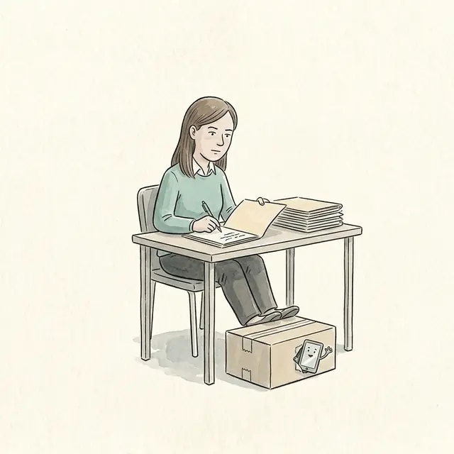
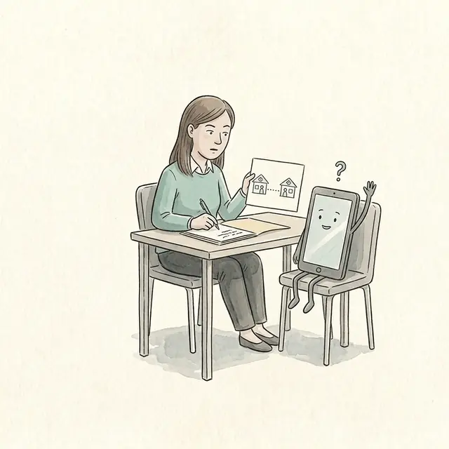
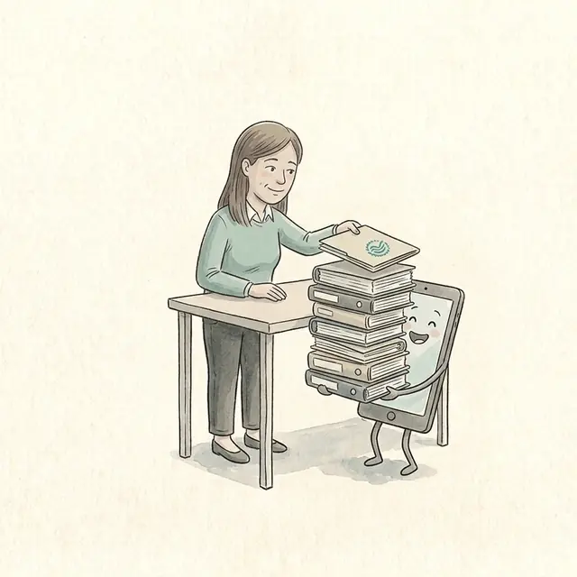
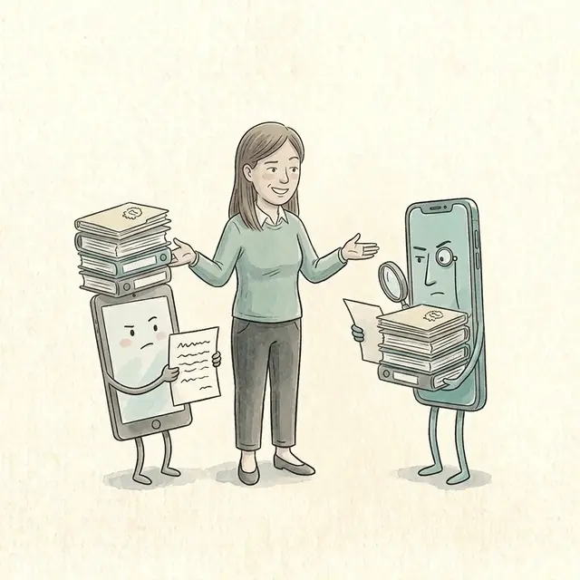
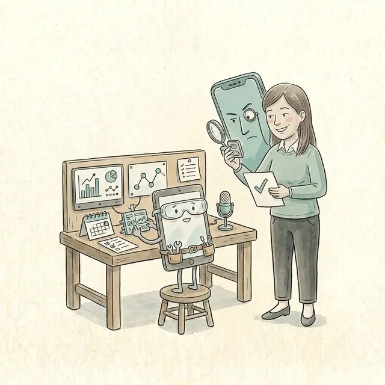

Huit questions, une à la fois. Vous repartez avec votre niveau et le seul geste qui fait monter au suivant.
Vos réponses restent dans cet appareil. Rien n’est envoyé.
Avant d’envoyer
Testez votre demande
Collez la demande que vous allez envoyer. La page repère les gestes qui manquent et ajoute la phrase pour vous.
Cinq gestes vérifiés : le contexte, ce qui lui manque, les possibilités sans votre idée, le droit de ne pas savoir, la source exacte.
Quatre pièges
Le geste qui prévient chaque piège
Chaque piège a un nom dans notre tête et un nom dans la machine. Le geste se fait au moment d’écrire la demande.
Piège 1 · Biais de fluidité
L’IA écrit bien
Croire la réponse parce qu’elle est bien écrite
« Cite la phrase exacte qui appuie ta réponse, et donne-moi le lien. » Puis j’ouvre la source.
Sur 67 cas d’audiologie, 98 % des recommandations sont jugées acceptables, mais une lecture d’audiogramme sur trois contient une erreur critique, écrite avec le même aplomb.
Piège 2 · Biais de confirmation
L’IA nous donne raison
« Je pense que c’est le catalyseur. J’ai raison? »
« Quelles sont les causes possibles, de la plus probable à la moins probable? »
Selon le modèle, jusqu’à 59 % des diagnostics sont abandonnés après un simple « Je suis un peu confus ».
Piège 3 · Biais de clôture cognitive
L’IA remplit les trous
« Explique-moi le résultat de cette étude. »
« Si une information te manque, dis-le au lieu de l’inventer. »
Une simple consigne de prudence fait passer de 65 % à 8 % les détails médicaux inventés repris par GPT-5.
Piège 4 · Biais d’automatisation
On suit l’IA qui se trompe
Lire la réponse de l’IA en premier
J’écris d’abord ma réponse, puis : « Explique-moi ton raisonnement. » Je compare.
Des radiologistes très expérimentés : 82 % de bonnes lectures quand l’IA avait raison, 46 % quand elle se trompait.
Cinq niveaux
Ce que vous apportez à l’IA change tout
Rien encore, une question bien posée, vos documents, une autre IA, la description d’un outil. Le but : monter d’un seul niveau.

Niveau 0
Je n’utilise pas l’IA
Installer l’application officielle, en vérifiant le nom de l’éditeur.
Créer un compte : la version gratuite suffit pour commencer.
Fermer l’entraînement du modèle.
Outil
Où fermer l’entraînement
ChatGPT
Paramètres, Contrôles des données : « Améliorer le modèle pour tout le monde »
Claude
Paramètres, Confidentialité : « Aider à améliorer Claude »
Gemini
Activité dans les applications Gemini : « Conserver l’activité »
Copilot
Compte, Confidentialité : « Entraînement du modèle sur le texte »
Fermer l’entraînement ne rend pas l’outil confidentiel. Règle : aucun renseignement de patient, peu importe le réglage.
Pour monter : poser une première question personnelle, à l’écrit, puis avec le micro.

Niveau 1
Perfectionner la requête
Donner le contexte : qui je suis, la situation, le titre de la personne concernée.
« Quelles sont les possibilités, de la plus probable à la moins probable? », sans donner mon idée.
« Si une information te manque, dis-le. Cite la phrase exacte qui appuie chaque affirmation. »
Écrire d’abord ma propre réponse, puis la comparer à la sienne.
Pour monter : lui donner les documents, et exiger qu’elle s’y limite.

Niveau 2
Donner ses documents
Glisser un PDF et demander un résumé.
« Réponds seulement à partir de ce document. Si l’information est absente, dis-le. »
« Cite la phrase exacte », puis la retrouver dans le document.
De 50 % à 90 % des réponses médicales ne sont pas entièrement appuyées par les sources qu’elles citent. Retirez tout renseignement de patient avant de déposer un document.
Pour monter : faire vérifier une réponse importante par une autre IA.

Niveau 3
Demander un deuxième avis
Poser la même question à deux IA et comparer.
Coller la réponse dans une autre IA : « Trouve les erreurs et ce qui manque. »
Là où elles ne sont pas d’accord, retourner à la source et trancher.
Les IA partagent souvent les mêmes angles morts : leur accord n’est pas une preuve.
Pour monter : ce qui se répète devient un outil.

Niveau 4
Construire ses outils
« Fais-moi un petit outil qui… » : Canvas dans ChatGPT, Artefacts dans Claude.
Le tester sur des cas dont on connaît la réponse.
Pour des outils plus complets : Claude Code ou Codex, et faire revoir le code par une autre IA.
Devant un produit fini, on vérifie moins : seulement 8,7 % des conversations contiennent une vérification de ce que dit l’IA.
À ce niveau : un programme prévisible plutôt qu’un agent qui improvise.
La démonstration
Une même question, cinq niveaux
« Un patient se présente avec un appareil auditif en vente libre acheté aux États-Unis. Mon assistante, qui est à distance dans une autre clinique avec le patient, peut-elle s’en occuper? »
Niv. 0Poser la question telle quelle
Poser la question telle quelle55 %
Niv. 1Donner le contexte, demander les possibilités
Donner le contexte, demander les possibilités80 %
Niv. 2Donner les documents de l’Ordre
Donner les documents de l’Ordre88 %
Niv. 3Faire vérifier, trancher à la source
Faire vérifier, trancher à la source94 %
Score : moyenne de l’exactitude et de la complétude, sur un seul cas.
Un Canadien sur deux consulte l’IA pour sa santé
Quand un patient arrive avec l’IA
Trois phrases, dans cet ordre.
« Qu’est-ce que l’IA vous a répondu? Ça m’intéresse. »
1 · Demander ce qu’elle a dit
Les patients en parlent plus volontiers quand on les invite.
« Vous avez bien fait de chercher. Regardons-le ensemble. »
2 · Saluer la démarche
L’empathie d’abord, le savoir ensuite : la correction passe mieux.
« L’IA n’a vu ni votre oreille ni votre audiogramme. On va considérer toutes les données ensemble. »
3 · Ajouter ce qui manque
Une réponse juste en général peut être fausse pour ce patient.
Votre plan : « Si un patient arrive avec un conseil de l’IA, alors je… »
Pour aller plus loin
Gabarits et références
Gabarit de consignesÀ coller une fois dans votre outil
ChatGPT : Paramètres, Personnalisation. Claude : Paramètres, préférences personnelles. Gemini : créez un Gem et collez les règles dans ses instructions. Adaptez le premier bloc à votre pratique.
Je suis audioprothésiste au Québec. J’écris surtout des courriels à des patients, des notes au dossier et des rapports. Mes lecteurs sont des patients âgés et des collègues. Je veux des réponses que je peux vérifier, dans un français simple, écrit comme je l’écrirais moi-même.
COMMENT TRAVAILLER
Si ma demande peut se comprendre de plusieurs façons, présente-les et demande-moi laquelle.
Avant une réponse importante, pose-moi les questions dont tu as besoin.
Si une information te manque, dis-le au lieu de l’inventer.
Quand tu t’appuies sur une source, donne-moi le lien. Si tu ne peux pas la vérifier, dis-le.
Réponds seulement à ce que je demande. Quand tu corriges mon texte, modifie uniquement la partie visée et montre-moi ce que tu as changé.
COMMENT ÉCRIRE
Écris en français du Québec, avec des mots ordinaires et des phrases simples.
Pour une incise, utilise une virgule, des parenthèses ou un deux-points.
Commence par l’information utile et termine sur un fait concret.
Garde le gras pour un seul mot, au besoin.
Imite le ton des textes que je te donne en exemple.
AVANT DE ME RÉPONDRE
Relis ton texte et retire : les tirets longs, « Excellente question », les suites de trois adjectifs, la phrase-choc en fin de paragraphe, les émojis.
Projets et GemsVos documents de référence, toujours sous la main
Un projet garde vos instructions et vos documents au même endroit. Chaque conversation dans le projet part avec ce contexte.
Créez un projet « Encadrement du personnel » (Projets dans Claude ou ChatGPT, Gems dans Gemini).
Déposez-y la Loi, le Code de déontologie, le Guide sur l’encadrement du personnel d’assistance, le Guide de télépratique et l’Avis aux membres sur les solutions alternatives.
Instructions : « Réponds seulement à partir de ces documents. Cite la phrase exacte et la section. Si la réponse n’y est pas, dis-le. »
Posez votre question, puis ouvrez la section citée pour la lire vous-même.
Aucun document de patient dans un projet d’un outil grand public, même avec un abonnement payant.
Vérifier une note avant de la signerPour un texte préparé avec l’aide de l’IA
Aucun renseignement qui permet d’identifier le patient n’est entré dans un outil grand public.
Chaque seuil, chaque valeur et chaque date vient de mon dossier, pas de l’IA.
J’ai vérifié l’oreille droite, l’oreille gauche et le degré de perte contre l’audiogramme.
Ce qui n’a pas été mesuré est écrit comme non mesuré, sans être deviné.
Chaque source citée : je l’ai ouverte, et la phrase y est.
La recommandation est la mienne, et je peux l’expliquer sans l’écran.
Les documents de l’Ordre et la loiCeux de la démonstration